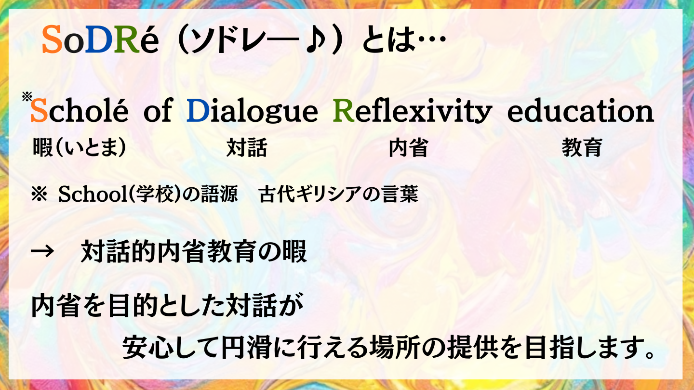
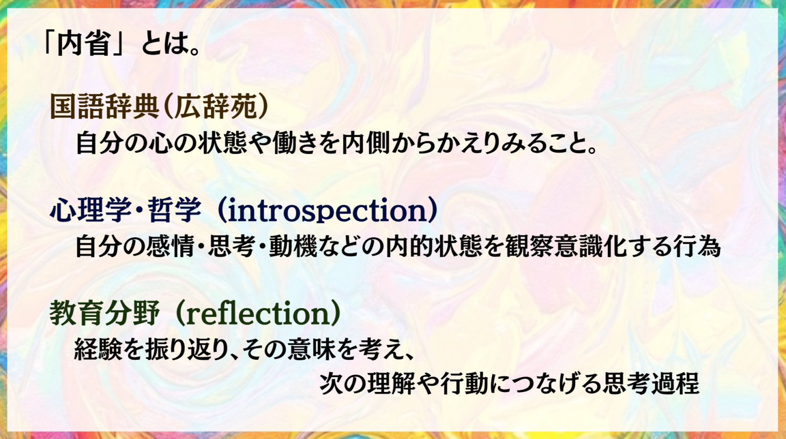
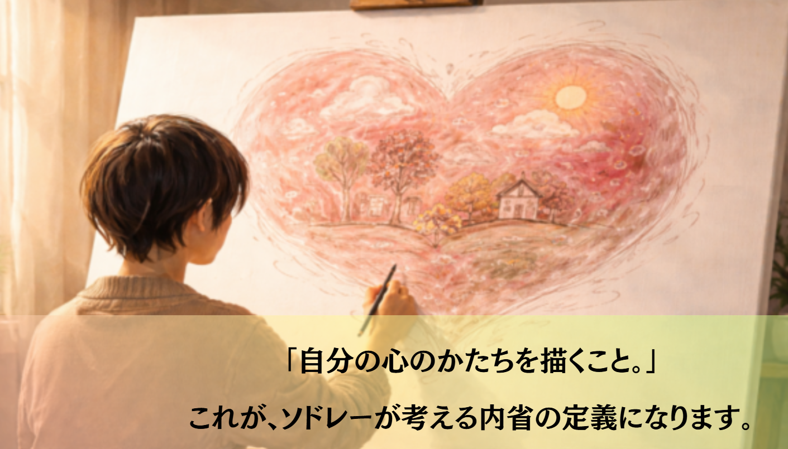
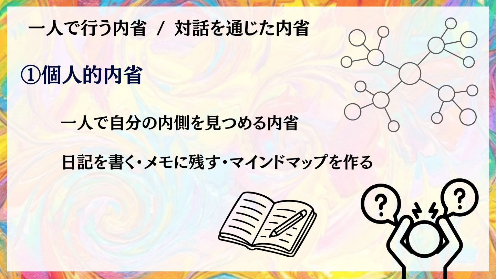
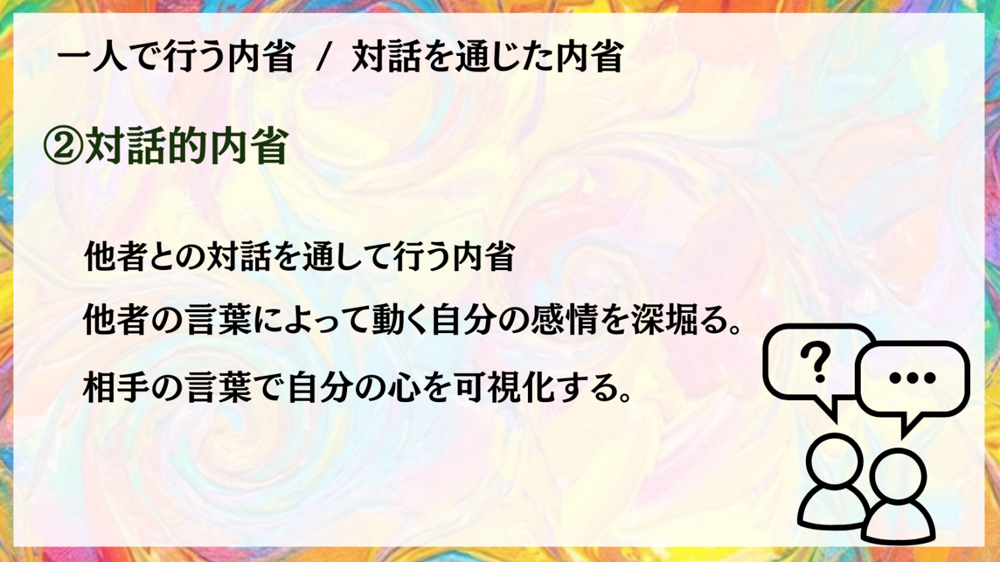
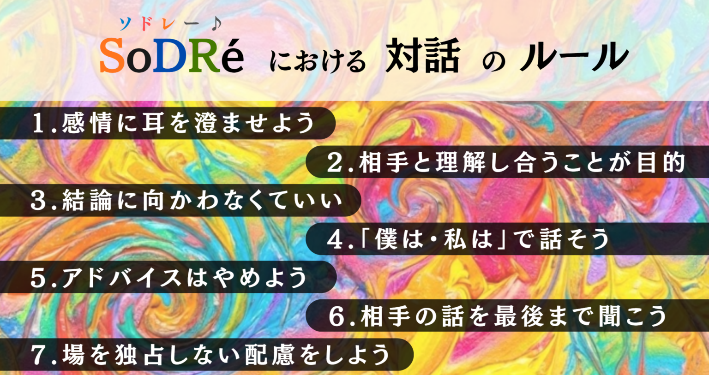
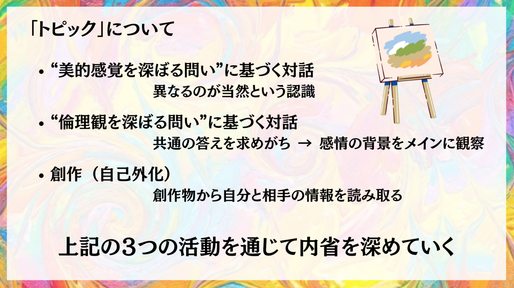

1. ～Scholé of Dialogue Reflexivity education～ 対話的内省教育の暇

SoDRé（ソドレー♪）は、対話を通じて、内省を行う場所です。
ここで行うのは、答えを出すための議論でも、意見を競い合うディスカッションでもありません。
他者との対話を通して、自分の感情や考えの動きに気づき、「自分はどのような人間なのか」を少しずつ理解していく。
SoDRé（ソドレー♪） は、そのための時間と環境を提供します。
そのために私たちは以下に示す「ルール」・「トピック」・「雰囲気作り」の３つ大切にしております。
トピックにこだわり、提供の仕方を工夫することにより対話は活発に行われます。
ルールによって対話の方向が正解を求めたり、社会や集団の考えに向かったりすることを防ぎます。
参加者の対話が円滑に行われるように運営メンバーが触媒となり対話を促進させる「雰囲気」を作ります。
①、②に関しては、それぞれ詳細に述べているページを作成しているのでそちらをご覧くださいませ。
ここでは③について詳しく述べさせていただきます。
「対話化を活性化させる雰囲気作り」
これこそ、SoDRé（ソドレー♪）が最も得意とし、最も大切にする要素になります。
運営メンバー全員が「最高の触媒」であることを目指します。
「対話前の導入」
「対話中の見守り」
「対話を活発化させる声かけ」
を通じて、参加者同士の化学反応を促進します。
2. 内省とは・・・
まず、「内省」 について辞書で調べると以下のような説明が出てきます。

私たちは、「内省」を「心の形を知ること」と捉えています。

人の「心」は経験によって変化していくものですが、「生まれつきの心の形」が違うとすれば、経験によらない本質的な欲求が見つけられるはずです。
「○○がしたい、○○が好き」という本来の気持ちにアクセスすることは、今よりも「生きやすさ」につながると私たちは考えています。
心のかたちを描きながら、経験から生まれたものではない、その方の心の求めるもの、望むことにアクセスしたいと思っています。
経験が作り出す欲求を自覚する。
入学試験や就職活動において、志望動機や自己PRをされる際、「○○を経験したから△△したい」と語ることがあります。
しかし、ここで最も重要なのは、「なぜ、他ならぬ "あなた" がそれに憧れたのか」という部分です。あなたじゃなければ、どうだったでしょうか？
仮にこの答えが「人による」だとすれば、それこそがあなたが特別に持っている個性です。それを発見することは、立派な内省です。
一方、ネガティブな経験（例えば、傷ついたことなど）に向き合うのも大切です。重要なのは、単に「二度としない」と決めることではなく、「どうして傷ついたのか」「自分は何が嫌だったのか」を本質的に理解することです。
嫌な経験を振り返るのは辛いことですが、向き合って原因を追究することで、自分の心が本当に望まないものを知ることができます。大事なのは本質を知ること。それを知ることで、すっきりとするはずです。これもまた、大切な内省です。
北欧諸国の考える「内省」
私たちは、北欧の「内省」に対する考え方や取り組みに感銘を受け、ソドレーを設立しました。北欧では、「対話」を何よりも重んじる風潮があります。
〜 民主主義と内省の深い関係 〜
北欧諸国では、対話のために自分を深く知ることがいかに大切か、教育現場でも当たり前のように共有されています。ドイツやイギリス、アメリカの上流校でも、芸術の授業などを通じて「内省」や「対話」の能力が育まれています。
詳しく知りたい方は代表たじあきのノートのこちらの記事をお読みください。
3. 個人的内省と対話的内省
内省には２種類あります。
一つは、一人で行う内省（個人的内省）

もう一つは、他者と対話して行う内省（対話的内省）

どちらも大切ですが、対話的内省は安心できる相手に深い自己開示をしなければなりません。
信頼できる他者と安心できる場所で話すことで、自分では気づきにくい思考の癖や感情の動きが、言葉として立ち上がってくることがあります。
ただ、個人的内省が進んでいなければ、自分の感情を具体的に表現することができません。
自分を知るためには、個人的内省と対話的内省をバランス良く進めていく必要があると考えています。
〜鏡の無い世界で自分の顔の絵を描く〜
手で触れて自分の顔を確かめながら絵にすること。これが個人的内省です。でも、上手に自分の顔を描くことは難しいと思います。
ここで、他者がいたならば、自分の顔について聞くことができると思います。
「あなたの顔は、眼が○○で、鼻が△△で、唇が……」
このように他者から見た自分の情報を知り、絵を描くことが対話的内省になります。
この例えでも分かりにくい場合は、是非体験会で気軽に質問してください。
4. 対話のルール
私たちは、対話をより活性化させるため、また参加者に安心していただくため、ルールを設けております。
目的に合った対話が行われるように以下のルールを設けました。

5. 対話のトピック

私たちは上記3つのトピックについて、バランスよく扱うことにより、様々な視点からその人間を見ることができると考えています。
対話のトピックは大きく2つに分類されます（東京大学・今野による分類）：
- 美的感覚を深掘る問いに基づく対話（異なるのが当然と言う認識のもの）
- 倫理観を深掘る問いに基づく対話（同じことが当たり前と思っている題材）
例えば、好きな色は人によって異なることが当然のように扱われます。このようなトピックが「美的感覚を深掘る問いに基づく対話」となります。
逆に、「人を傷つけてはいけない」「ルールを破ってはいけない」といった、誰もが当たり前と思っていることでも、「なぜ？」という観点で対話をすると、人によって理由が異なることに気づきます。これを「倫理観を深掘る問いに基づく対話」と定義付けました。
創作（自己外化）と対話
最後に創作（自己外化）ですが、こちらは簡単な芸術活動をしていただき、それに基づく対話をします。ソドレー設立のきっかけは、イギリスや北欧で行われている芸術教育にあります。
信じられないかもしれませんが、これらの国では芸術が学校教育における中心に位置づけられています。芸術は答えのない領域だからこそ、人々が自分自身を表現し、対話によって理解し合うことにつながるのです。
〜 芸術教育の3つの目的 〜
彼らは小学校から大学生まで、作成した絵と、そこに込めた気持ちを綴った文章を用いて対話を続けます。まず絵だけを見てもらい、他者からのコメントを貰い、その後に自分の文章を共有します。
「私だったらその気持ちはこの色で表現するかもしれない。」
「僕だったらその考えをこの形で表現するだよ。」
このような経験を積み重ねてきた人々と比べ、私たち日本人はどうでしょうか。ソドレーでは、これをオンライン上で再現します。
※ 創作（自己外化）には創作期間が必要なため、体験会では実施することができません。
ぜひ、スタンダードプランに加入していただき、この深い対話を体験していただければと思います。
6. SoDRéのこだわり
SoDRéの「S」は、あえて「School」にしませんでした。
「School」には教師と生徒という、教える側と教わる側の構造があります。しかし、語源と言われる「Scholé（スコレー：暇）」は、古代ギリシャで答えの出ない問いをひたすら話し合う場でした。
ここは誰かが教える場ではなく、自らの力で自分のことを解き明かしていく場所であって欲しいと願っています。
〜 代表たじあき個人の想い 〜
私は教員時代、1人が40人に教える構造に違和感を覚えていました。効率的ではありますが、学校の本質は「同年代と触れ合い、考えを共有し、自分と他人の違いについて気づくこと」にあると感じていたからです。
だからこそ私は、自分が話すのを極限まで抑え、生徒たちが自ら対話を通して学びを深める授業を追求してきました。周囲からはサボっているように見えたかもしれません（笑）。
しかし、生徒たちが活発に話し合いながら自己を探求する姿を見守るのが、私は何よりも好きでした。
「触媒」としての役割
一方向の授業よりも、対話をコントロールする方が遥かに難しい。情報の開示、制限、流れのマネジメント。それこそが、SoDRéの運営メンバーに求められる力です。
最善の一手を打てない時もあるかもしれませんが、できる限り皆さんが「自分のこと」を探求し合う場が活発なものになるよう努力いたします。
ここは、教わる場ではなく、
自ら探る場にいたします。
それが、SoDRéのこだわりです。